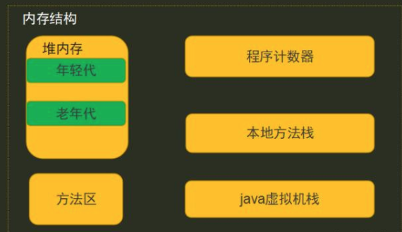
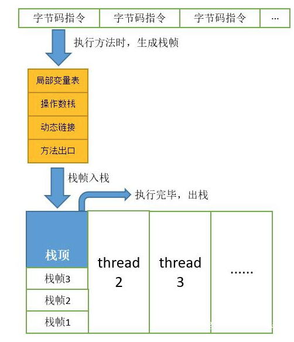

java 内存结构
java 内存结构
首先 java程序是运行在jvm(java虚拟机)中，而jvm是跨平台的。

程序计数器
程序计数器： 主要功能是记录当前线程执行程序的位置，通过改变计数值来确定执行下一条指令。每个线程的创建，都会创建一个程序计数器，并且对于每个线程而言是互相独立的。比如我们在debuger模式下运行，for循环的停止，异常的抛出，都是通过改变该线程对应的计数值来确定下一个执行指令。
java虚拟机栈
java虚拟机栈：主要功能是临时存储线程执行到的每个方法需要的参数，其内存空间在编译时就已确定。与程序计数器一样，每创建一个线程，则创建一个虚拟机栈，线程每执行到一个方法，对应的栈里就会创建一个栈帧，栈帧会存储局部变量表、动态链接、操作数和方法出口等信息，执行方法，栈帧入栈，方法执行完，栈帧出栈。

本地方法栈
本地方法栈与java虚拟机栈一样，只是记录native方法执行。jni native调用的c、c++函数
堆得内存结构
分为老年代、新生代，内存比为8:2
其中新生代分为: edan、from、to 内存分为8:1:1
直接new产生的对象被分配到edan（大对象会被直接分配到老年代），当发生GC时，会通过复制清除算法，清除edan+from区域可被回收的对象，
而不可被回收对象会被复制到to区，而在下一次GC时，会清除edan+to区可回收对象，将不可清楚的对象复制到from区，并且每次回收时，会整理碎片内存。
如此反复，GC15次后，会将对象放入到老年代。
标记清除算法
针对于老年代内存
格局内存可达性分析，从GC Root 不可达时，会被第一次标记为清除对象，并执行对象的finalize()方法，
如果这个对象被判定为有必要执行finalize()方法，那么这个对象将会被放置在一个叫做F-Queue的队列之中，并在稍后由一个虚拟机自动建立的、低优先级的Finalizer线程去执行它
finalize()方法是对象逃脱死亡的最后一次机会，稍后GC将对F-Queue中的对象进行第二次小规模标记，如果对象在finalize()中成功拯救自己(只需要重新与引用链上的任何一个对象建立起关联关系即可)，那在第二次标记时它将会被移除出”即将回收”的集合；如果对象这时候还是没有逃脱，那基本上它就是真的被回收了。
- 注意：对象的finalize()方法只会被系统执行一次。
GC
gc分为minor GC、full GC
minor 作用区域是新生代内存、算法：复制清除算法。会整理碎片
full GC作用区域是老年代内存，算法：标记清除算法，不会整理碎片。
GC时判断是否可回收的依据是：内存可达化：判断堆、方法栈、静态变量、静态方法区中是否有该对象的引用。
每次 gc时会 会stw（stop the world）,线程会被挂起两次
方法区
在jdk1.8以前，还存在方法区，
方法区同 Java 堆一样是被所有线程共享的区间，用于存储已被虚拟机加载的类信息、常量、静态变量、即时编译器编译后的代码。
更具体的说，静态变量+常量+类信息（版本、方法、字段等）+运行时常量池存在方法区中。常量池是方法区的一部分
JDK1.8 使用元空间 MetaSpace 替代方法区，元空间并不在 JVM中，而是使用本地内存。元空间两个参数：
MetaSpaceSize：初始化元空间大小，控制发生GC阈值
MaxMetaspaceSize ： 限制元空间大小上限，防止异常占用过多物理内存